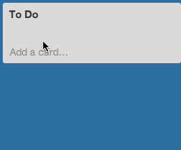

How to Use Trello
a simple guide
Adding Tasks

Moving a task from "To Do" to "Doing" column
Adding Activity to task
Moving task to "Done" column after task has been completed
Create a new list and change positioning